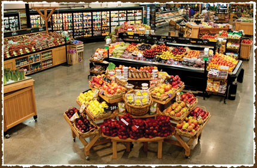

Sai's Groceries and Stores Inc.
What are we about

We are number one grocery provider and supplier in the metro detroit area, we have consistently strived to meet the utmost quality and nutrition requirements for the general supplier category in groceries. This outstanding quality service has made us a word to remember by everyone and that love has given us the confidence to step forward our business opening more stores and grab n go's for the regular joe to enjoy our delicacies. we will continuosuly strive to improve out business to make your day brighter.
When we fist started our business we wanted to make a simple groccery produce that our community can enjoy and there byinherently develop a small and fun business out of it, it took a lot of work to get here where we are and you appreciation and support is the ey to the success of our business. come and visit us and find out what we can do to meet you needs and family requirements. Empty stomachs are no fun and we are here to just counter that effectively.
The store has been changed and modified throughout the years to meet our customer's needs, yet even today Sai's produce has the same commitment to quality and service that we had years ago. We get up before dawn every day to drive to the produce terminal and eastern market. WE personally select only the best produce available for our customers.
We are extremely proud to announce our new Wood Stone Oven. This addition to our culinary delights is perfect for pizzas and specialty grinders! Our dough and bread is house made and our sauce is outstanding! Try one Today!!
Our Passion
Taste the difference made from scratch cakes and pastries can make. Our culinary pastry chefs use only the freshest and highest quality ingredients to create decadent desserts. From cupcakes and cookies to extradinary wedding cakes, Sai's will help you putting the 'icing' on your day !
We specialize in catering the perfect reception for your special day!! Fabulous cuisine, professional staff, customized wedding cakes and favors, the perfect floral centerpieces and bouquets.Call today to meet with our event planner and visit us on The Knot!!. Future Business & Corporate Catering Clients,2016 is the perfect year to utilize Sai's Gourmet Catering for all your corporate catering needs. We will deliver the finest cuisine with excellent customer service for all your meetings, employee appreciation, grand openings, anniversary's and so on.Sai's Gourmet Catering & Events will take all the pressure and panic out of planning any event. How can we do that, you ask? Because we are a full service catering company with a culinary team, professional & friendly staff and all the latest trends to make every event spectacular.